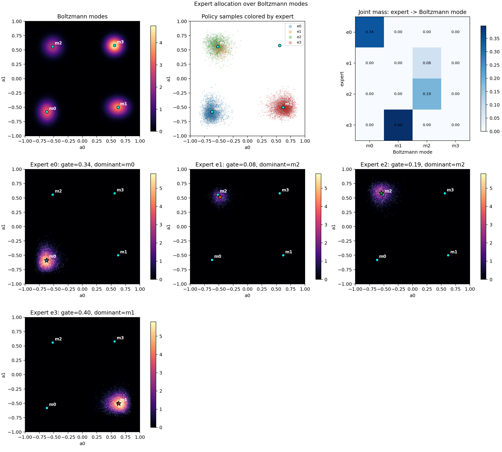
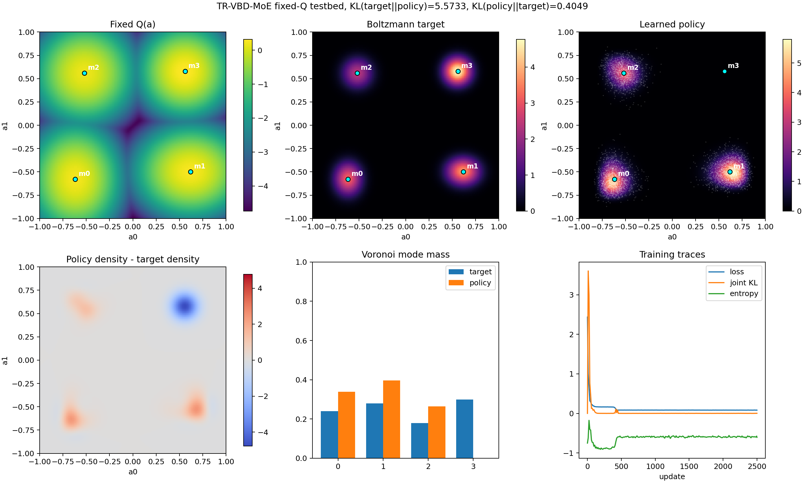

TR-VBD-MoE Multimodal Q Testbed
Static one-state analytic-Q testbed. The panels compare the fixed Q landscape, Boltzmann target density, learned policy density, density residual, Voronoi mode masses, and training traces.
Expert Allocation
Expert-colored samples, per-expert joint action densities, and the mass each expert assigns to each Boltzmann mode.

Policy Fit
